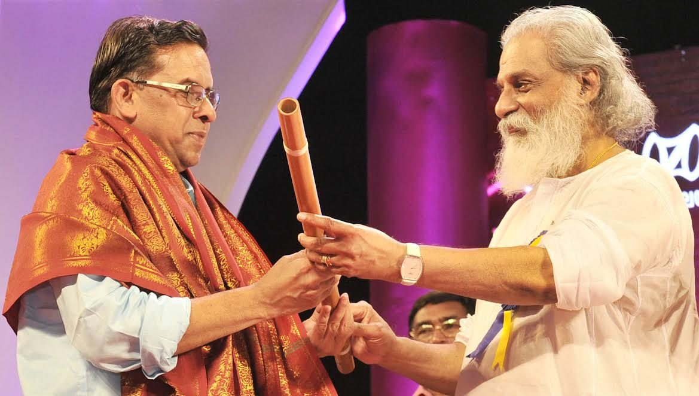
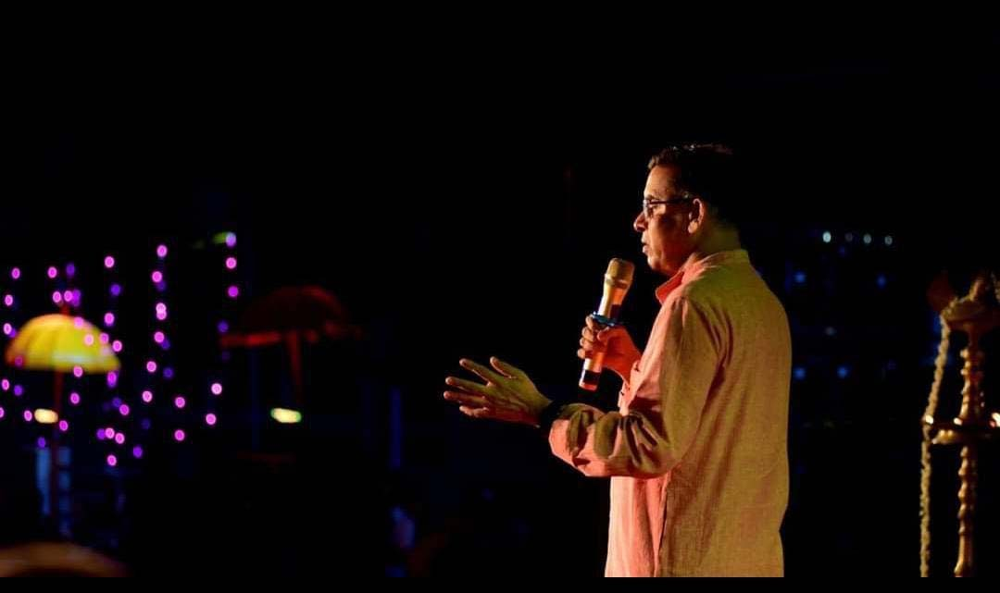
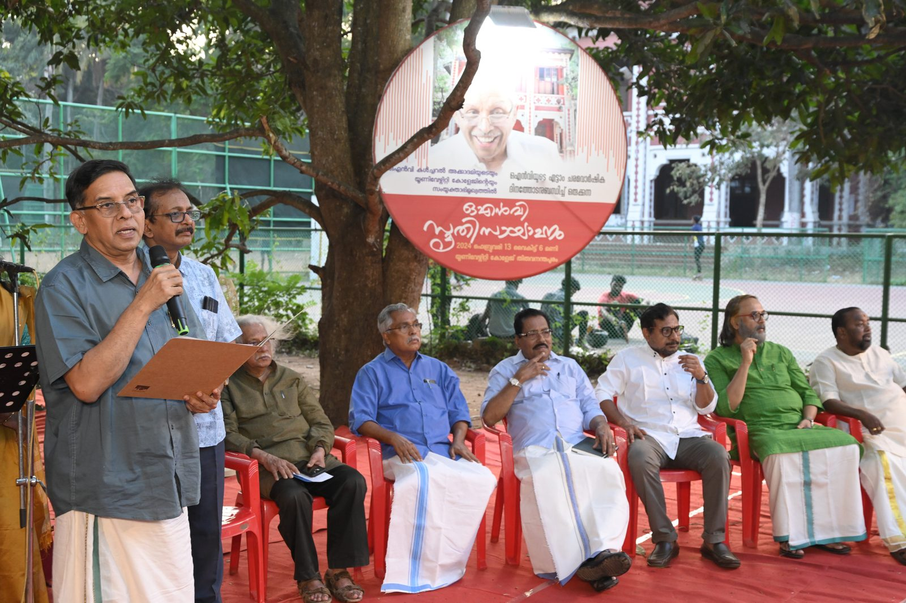

Lyrics · Music · Theatre · Danceഗാനം · സംഗീതം · നാടകം · നൃത്തം
On Stage & Screenരംഗവേദിയിലും ചലച്ചിത്രത്തിലും
Prabha Varma's words have a second life in performance — as film songs heard by tens of millions, as Carnatic kritis sung in concert, as Mohiniyattam padams, and as full-length plays that have toured Kerala for years.പ്രഭാവർമ്മയുടെ വാക്കുകൾക്ക് അവതരണത്തിൽ രണ്ടാമതൊരു ജീവിതമുണ്ട് — കോടിക്കണക്കിനു പേർ കേട്ട ചലച്ചിത്രഗാനങ്ങളായി, കച്ചേരികളിലെ കൃതികളായി, മോഹിനിയാട്ട പദങ്ങളായി, കേരളമാകെ സഞ്ചരിച്ച നാടകങ്ങളായി.
Film songsചലച്ചിത്രഗാനങ്ങൾ
Kerala State Film Award for Best Lyricist in 2006, 2013 and 2017. A complete filmography with audio links will be added here.2006, 2013, 2017 വർഷങ്ങളിൽ മികച്ച ഗാനരചയിതാവിനുള്ള സംസ്ഥാന ചലച്ചിത്ര പുരസ്കാരം. സമ്പൂർണ്ണ ഗാനപ്പട്ടിക ഉടൻ.
Carnatic music & danceകർണാടക സംഗീതം · നൃത്തം
More than sixty classical kritis and over two dozen Mohiniyattam padams, collected in Prabha Varmayude Karnataka Sangeetha Kruthikal (State Language Institute). Concerts devoted entirely to his compositions — two and a half hours of Prabha Varma Kritis — have been held across Kerala and beyond. Dancers including Dr Rajashree Warrier, Dr Kalamandalam Sheeba Krishnakumar, Dr Shruthi Shobhi, Sithara Balakrishnan, Anjana and Regatta Chandran have built productions on his poems, staged across India including Delhi. In 2016 President Pranab Mukherjee honoured him at Rashtrapati Bhavan for his contribution to the performing arts.അറുപതിലധികം കൃതികളും രണ്ടു ഡസനിലധികം മോഹിനിയാട്ട പദങ്ങളും — പ്രഭാവർമ്മയുടെ കർണാടക സംഗീത കൃതികൾ (ഭാഷാ ഇൻസ്റ്റിറ്റ്യൂട്ട്). അദ്ദേഹത്തിന്റെ കൃതികൾ മാത്രം ഉൾക്കൊള്ളുന്ന രണ്ടര മണിക്കൂർ കച്ചേരികൾ കേരളത്തിലുടനീളം. ഡോ. രാജശ്രീ വാര്യർ, ഡോ. കലാമണ്ഡലം ഷീബ കൃഷ്ണകുമാർ തുടങ്ങിയ നർത്തകർ അദ്ദേഹത്തിന്റെ കവിതകൾ അരങ്ങിലെത്തിച്ചു. 2016-ൽ രാഷ്ട്രപതി പ്രണബ് മുഖർജി രാഷ്ട്രപതി ഭവനിൽ ആദരിച്ചു.
Theatre & visual artനാടകം · ചിത്രകല
Sangeetha Nataka Akademi awardee M. Santhosh directed professional plays based on Shyama Madhavam and Kanal Chilambu; between them they have played more than 800 packed houses across Kerala. Shyama Madhavam was also staged as a musical drama seen by hundreds of thousands. Narayanan Kutty and his team from Malappuram have mounted mural-painting exhibitions on the two poems, and Shobha Varma's novel Chilamboli was written in response to Kanal Chilambu. He has twice won the Kerala Sangeetha Nataka Akademi Award for songs in plays.സംഗീത നാടക അക്കാദമി പുരസ്കാര ജേതാവ് എം. സന്തോഷ് സംവിധാനം ചെയ്ത ശ്യാമമാധവം, കനൽച്ചിലമ്പ് നാടകങ്ങൾ 800-ലധികം വേദികളിൽ. ശ്യാമമാധവം സംഗീതനാടകമായും അരങ്ങേറി. മലപ്പുറത്തെ നാരായണൻകുട്ടിയും സംഘവും ചുവർച്ചിത്ര പ്രദർശനങ്ങൾ ഒരുക്കി; ശോഭാ വർമ്മയുടെ ചിലമ്പൊലി എന്ന നോവൽ കനൽച്ചിലമ്പിനോടുള്ള പ്രതികരണമാണ്. നാടകഗാനങ്ങൾക്ക് രണ്ടു തവണ സംഗീത നാടക അക്കാദമി പുരസ്കാരം.



